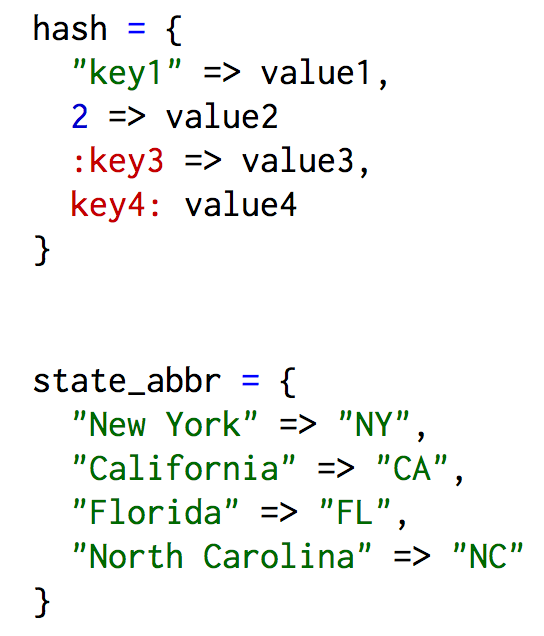

Ruby Arrays and Hashes
Sunday, November 15, 2015
Have you ever considered making a computer program and how you'll store the data you want your program to use? You can do this in the Ruby programming language by assigning names, called variables, to store the data you want your program to use. Sometimes the data you'll want to store could be a list of words, numbers, information about friends and family, or words and their definitions. Based on the information you want to store you can choose between an array or hash for a collection data. However, it's up to you to decide which one to choose and to do that you need to understand their main differences.
Arrays
Arrays can be used to store many different kinds of data in an ordered list. An array can hold any combination of information such as numbers, letters, words, phrases, other arrays, and more. When creating an array you store the data between a pair of square brackets. Each piece of data is indexed with a number that you use to access the information and the index starts with zero.
Hashes
Hashes are sometimes called dictionaries because they store collections of data in key-value pairs. To create a hash you add key-value pairs between a pair of curly braces and separate each pair with a comma. Hash values are associated with indices called "keys" and you'll use the keys to get access to the values. A key could be anything such as a number, word, or symbol but it must be unique to the hash it belongs to. A value could be any type of data and multiple keys can have the same value. In Ruby, it is best practice to use symbols as keys, which are variable names that begin with a colon. As well, recent versions of Ruby allow you to write hashes without the hash rocket "=>" using a shorthand method that will translate the keys into symbols.
Arrays vs. Hashes
Arrays and hashes are useful structures that help you to store and represent your data but you may be unsure about which one to choose. When making the choice between the two structures it's important to keep in mind what kind of data you're storing and how you plan to use the information to solve a problem. To help you make a decision you can ask yourself a few questions.
An array is the best choice if you answer yes to...
- Is the order of my data important?
- Does my data look similar to a real stack in which I could easily add and/or delete information?
A hash is the better choice if you answer yes to...
- Will I be linking pieces of data with a specific label?
- Does my data have a dictionary-like feel?